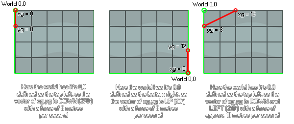

physics_world_gravity(xg, yg)
| Argument | Description |
|---|---|
| xg | The x component of the gravity vector |
| yg | The y component of the gravity vector |
Returns : N/A
As with all the physics functions, physics_world_gravity will only work on an instance if the room has a physics world defined for it in the room editor or using
physics_world_create. It will then use the 0,0 defining point of the physics world to calculate the direction and strength of gravity based on the vector calculated from the xg and yg inputs. Here
are some images to illustrate...

As you can see, the xg,yg coordinates are relative to the position of 0,0 as defined for the physics world, and the gravity itself is calculated as a vector of those two components. So, the default values of 0,10 will
give you a gravity direction of down (270 degrees) with an acceleration of 10 metres per second squared. Note the metres per second squared! Like all the physics functions, gravity is calculated using metres
as a base measurement so the pixel to metre scale that you set in physics_world_create function is important here. Gravity is also cumulative on the object (but the exact amount depends on
what you have set for the function physics_fixture_set_linear_damping), meaning that in a room with a room_speed of 60, with no
damping, the instance will accelerate by 10 metres per second, every second - which, if you have a 0.1 pixel to metre scale is the same as saying it will accelerate to a speed of 100 pixels per second in 60 steps.
physics_world_gravity(-5, 0)
The above code will set gravity to be (assuming the room physics 0,0 is set to top left) to the right - 0 degrees - with an acceleration of 5 metres per second squared.